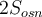
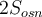

Площі поверхонь та об'єми тіл обертання
Площі поверхонь та об'єми тіл обертання


5) Формули площі поверхні і об'єму призми
Площею бічної поверхні призми є сума площ її бічних граней.
Площею повної поверхні призми є сума площ усіх її граней.
Площа бічної поверхні прямої призми дорівнює добутку периметра основи на висоту призми, тобто на довжину бічного ребра.
Наприклад: .
Площу бічної поверхні призми можна обчислити за формулою:
,
де Р – периметр перпендикулярного перерізу (перерізу призми площиною, яка перпендикулярна до бічних ребер і перетинає всі її бічні ребра), АА1 – довжина бічного ребра.
Площа повної поверхні призми () дорівнює сумі площі бічної поверхні ( ) і площ двох основ ():
) і площ двох основ ():
.
Об'єм V призми дорівнює добутку площі основи на висоту:
.
Об'єм V призми можна обчислити за формулою
,
де — площа перпендикулярного перерізу, АА1—довжина бічного ребра.
Об'єм прямокутного паралелепіпеда дорівнює добутку його вимірів:
.
Об'єм V куба дорівнює кубу його ребра:
.